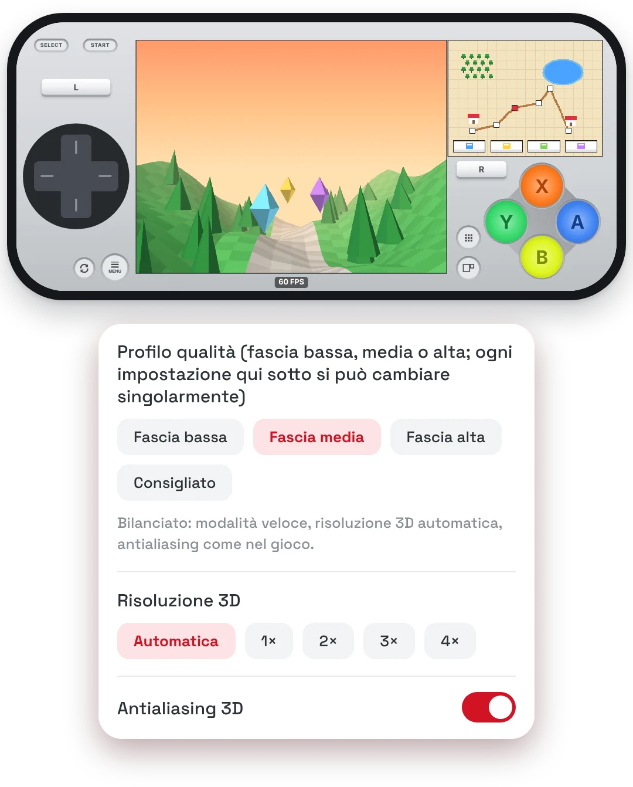

Funzioni
CarloDS è un emulatore NDS per smartphone e tablet Android. Il core di emulazione – processori ARM9 e ARM7, grafica 2D e 3D, audio, wireless e BIOS integrato – è stato sviluppato interamente in proprio e calibrato sulla console originale. La maggior parte dei giochi funziona senza file BIOS; il formato ZIP è supportato.
Core proprietario ad alta precisione
- Calibrazione basata su test hardwareTemporizzazione CPU, DMA, rendering 3D, antialiasing, clipping e altro
- Due coreIl core preciso, il più fedele all'hardware originale, e il core veloce con JIT, sensibilmente più rapido
- BIOS integrato; i file BIOS e firmware presenti nella cartella dei giochi vengono utilizzati automaticamente

Libreria dei giochi
- Lettura automatica di icone e titoli; supporto per sottocartelle e file ZIP
- Ricerca, giochi recenti e accesso rapido «Continua»
- Copertina personalizzabile per gioco
- Test delle prestazioni facoltativo al primo avvio, con impostazioni consigliate

Layout dello schermo e comandi
- Verticale, orizzontale grande + piccolo, orizzontale affiancato e orizzontale a schermo singolo, con un tocco e scambio degli schermi
- Comandi touch sullo schermo inferiore
- Orientamento dello schermo a libera scelta
- Tasti a schermo nascondibili per l'uso con un controller
- Chiusura e apertura del coperchio (la maggior parte dei giochi entra in standby)

Grafica e prestazioni
- Preset per fascia bassa, media e alta, oltre a un preset consigliato dopo il test delle prestazioni
- 3D fino a 4× la risoluzione (o automatica), antialiasing 3D, smussatura delle texture e ridimensionamento 2D morbido
- RenderingSoftware, OpenGL ES e Vulkan
- FiltriSmussatura, LCD, scanline, xBR e nitidezza CAS; luminosità e contrasto regolabili
- Opzioni di prestazioniUscita a 16 bit, 3D multithread, geometria istantanea, salto fotogrammi automatico
- Impostazioni di immagine, prestazioni e controller per ogni gioco
- Informazioni a schermoAnimazione di avvio, FPS e statistiche

Salvataggi e strumenti
- Più slot di salvataggio di stato con annullamento; salvataggio automatico in caso di interruzione
- Avanti veloce (fino a 4×), riavvolgimento (5, 10 o 15 secondi per tocco) e tasti turbo con velocità regolabile
- Scorciatoie in giocoVolume, salvataggio rapido, screenshot, coperchio, trucchi, ricerca in memoria, riavvolgimento
- TrucchiCodici Action Replay, database usrcheat.dat e cheats.xml, file .mch, .dct, .cht e di testo
- Ricerca in memoria in una finestra mobile senza interrompere il gioco, con visualizzatore di memoria e registro delle scritture

Gioco wireless e contenuti scaricabili
- Gioco wireless locale tra dispositivi sulla stessa rete Wi‑Fi o tramite hotspot mobile
- Sostituto integrato del servizio online dismesso, ospitato dal dispositivo (giochi selezionati)
- Contenuti scaricabili (sperimentale)Regali e distribuzioni integrati, disponibili offline

Funzioni aggiuntive
- Supporto per RetroAchievements
- Salvataggi nel cloud tramite Google Drive
- Controller e tastiere con tutti i tasti riassegnabili
- Microfono per i giochi che richiedono di soffiare o parlare; registrazione solo durante il gioco
- Slot GBAGioco GBA da RetroGenY, il nostro emulatore GBA, oppure Rumble Pak tramite la vibrazione del dispositivo
- Profilo della consoleSoprannome, compleanno, colore preferito, messaggio e lingua
- Segnalazione problemiInvio dei registri allo sviluppatore via email